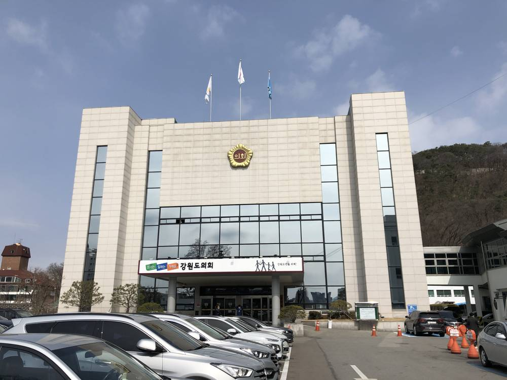

강원도의회, 햇빛소득마을 46곳 전력망 연계 가능성 미리 확인하라 요구

이병구 의원, 11월 10일 산업국 행정사무감사에서 924억 원 규모 사업의 계통 연계 점검
강원특별자치도의회 이병구 의원(양구)이 11월 10일 산업국 행정사무감사에서 햇빛소득마을의 전력망 연계 가능성을 미리 확인하라고 도에 요구했다. 이 의원은 발전시설을 완공해도 생산한 전력을 송전망에 잇지 못하면 안정적인 운영과 수익을 내기 어렵다고 짚었다. 도는 올해 12개 시군 46개 마을에 모두 924억 원을 들여 마을 단위 태양광발전소를 짓고, 태양광 설비와 에너지저장장치(ESS) 설치를 지원할 예정이다.
공공주도 육상풍력 계획입지에서는 양구 대암산 일대가 풍력자원을 활용할 수 있는 곳으로 거론되면서, 지역 특성과 자연환경을 반영해 꼼꼼히 검토해야 한다는 의견이 나왔다. 도는 2030년까지 주민이 참여하는 풍력발전단지를 추진하고, 부지는 풍황자원·환경성·주민 수용성·전력계통을 함께 따져 정할 계획이다.
행정안전부가 정책브리핑에 8월 3일 올린 1차 공모 결과를 보면 신청 마을 129개 가운데 86개가 선정됐고, 이 중 9개는 즉시 추진이 가능하며 77개가 조건부 선정이다(부지 임대 협의·자금 계획·계통연계 등 일부 보완이 필요하지만 단기간 내 추진이 가능하다고 본 마을). 정부는 이들 마을의 태양광 설치비를 최대 85%까지 금융으로 지원한다. 강원도 마을은 이 1차 공모에서 4곳이 선정됐다.
출처: 엔사이드 2026-11-10 김아영 원문 보기
출처: 대한민국 정책브리핑(행정안전부 햇빛소득마을 1차 선정 결과) 2026-08-03 햇빛소득마을 86곳 첫 선정…태양광 설치비 최대 85% 지원 원문 보기